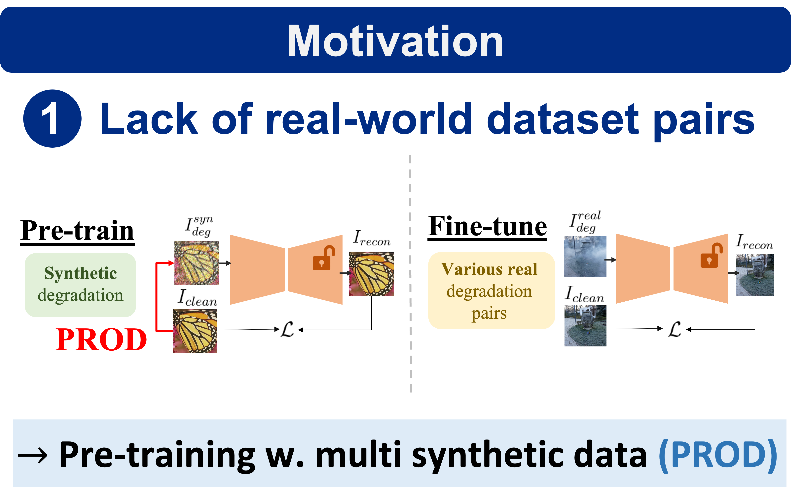
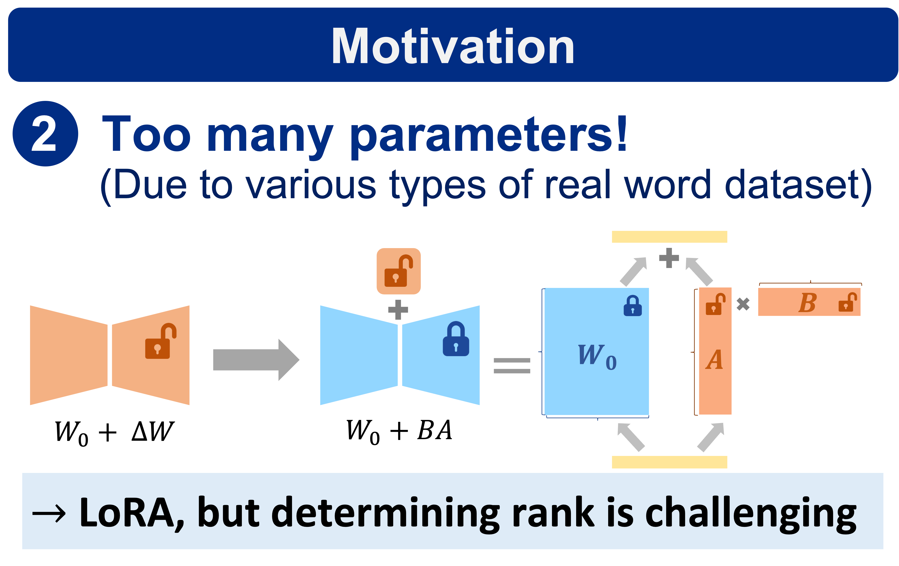
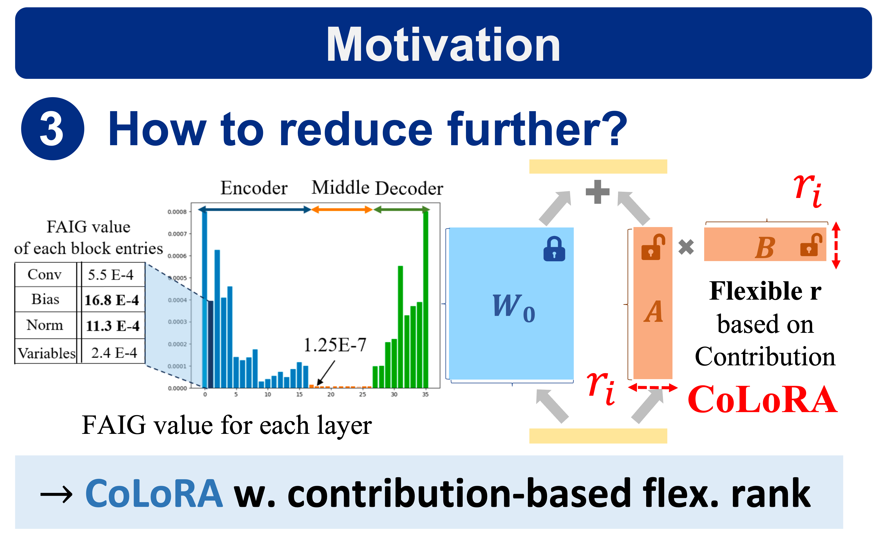
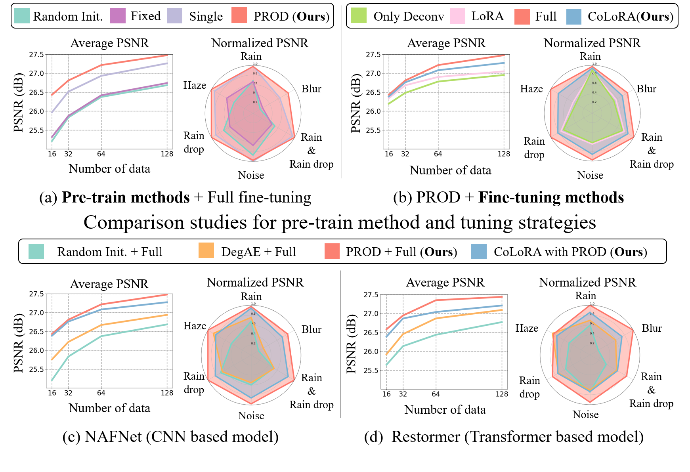

Video
Motivation


Abstract
Recently, pre-trained model and efficient parameter tuning have achieved remarkable success in natural language processing and high-level computer vision with the aid of masked modeling and prompt tuning. In low-level computer vision, however, there have been limited investigations on pre-trained models and even efficient fine-tuning strategy has not yet been explored despite its importance and benefit in various real-world tasks such as alleviating memory inflation issue when integrating new tasks on AI edge devices.
Here, we propose a novel efficient parameter tuning approach dubbed contribution-based low-rank adaptation (CoLoRA) for multiple image restorations along with effective pre-training method with random order degradations (PROD). Unlike prior arts that tune all network parameters, our CoLoRA effectively fine-tunes small amount of parameters by leveraging LoRA (low-rank adaptation) for each new vision task with our contribution-based method to adaptively determine layer by layer capacity for that task to yield comparable performance to full tuning. Furthermore, our PROD strategy allows to extend the capability of pre-trained models with improved performance as well as robustness to bridge synthetic pre-training and real-world fine-tuning.
Our CoLoRA with PROD has demonstrated its superior performance in various image restoration tasks across diverse degradation types on both synthetic and real-world datasets for known and novel tasks. We believe that our CoLoRA with PROD can be a promising solution for efficient parameter tuning in low-level computer vision tasks with pre-trained models.
Method

The overview of our proposed CoLoRA with PROD. (a) Our PROD leverages high-quality clean images and synthetic degraded low-quality images for pre-training the model. (b) Our proposed Contribution based efficient LoRA (CoLoRA) for new IR tasks. The proposed CoLoRA is configured to have different ratio of learnable network parameter (δ) for each layer based on quantified contributions, enabling efficient fine-tuning for new tasks. (c) CoLoRA can be adjusted according to contribution.
Quantitative Result
Performance comparison based on the scale of training data for 6 IR tasks. In the graph, the results of the 6 IR tasks are averaged for comparison. The x-axis represents the number of training data, and the y-axis is the average PSNR. In the radar graph, we compare the results of 6 IR tasks with Normalized PSNR at a training data size of 128. (a) and (b) present experimental results corresponding to pre-training and fine-tuning methods, respectively. (c) and (d) experimental results for the Our CoLoRA with PROD in NAFNet and Restormer. Our proposed CoLoRA (7%) has much fewer tuned network parameters compared to the full fine-tuning (100%) of NAFNet.
Qualitative Result

Qualitative results evaluated on the 6 IR tasks for our proposed method, generic Random initial + Full tuning and DegAE + Full tuning. Our methods with partial and full tuning yielded visually excellent results for the real IR task, outperforming others.